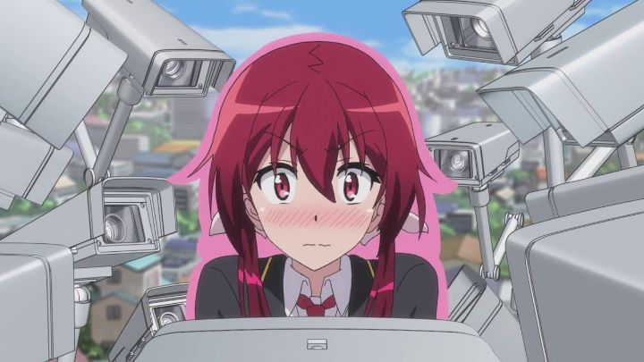

"Castle Town Dandelion" is an anime that was probably drowned out against an increasing volume of new anime in 2015 (with streaming and global interest at its peak, it became commonplace for over 100 new shows to be released and subtitled for international audiences). However, everyone who had watched it seemed to agree about how delightful it is. And it really is! It doesn't break any new ground, but it's sweet without being annoying or boring, and was fun to watch from start to finish."Dandelion" doesn't really have a good story, per say, but it has a great premise, supported by a lovable family of characters. In a fictional modern Japanese society, every day is peaceful and normal, aside from the fact that the land has a King. The King happens to live in a normal household, with his Queen and wife, and with a large family of nine children. With the oldest daughter about to turn 18, the King decides the time has come for the kingdom to choose which child would become his successor. Unlike other anime (or general drama television), this isn't a story about cutthroat backstabing and scheming for power among several heirs (looking at you, "Code Geass"). Yes, unlike other monarchies, the choice won't be made by the King himself or his advisors, but by general election and popular vote. All nine children are generally good people, and the land lives in peace and harmony, so there isn't any real risk regarding who wins. Over the course of a year, we get a slice-of-life comedy showcasing each daughter and son's daily life at school or home, with some insight into their strengths, their flaws, and their hard work towards campaigning to the public. As they grow, they also learn more about why they wish to be King in the first place (and not "Queen"; the show chooses to not make a deal on gender), or whether it's really what they want, given all they would have to give up in their normal lives.... and each kid also has superpowers. For unexplained reasons, each child has a unique power that proves their royal lineage, ranging from the ability to fly, to super strength, to materialize objects, teleport, and more. Mostly, this is just a fun device to add brief moments of urgency to save townspeople from everyday accidents, to showcase their personalities (how do they choose to use such power?), and for better comedy (one ability to talk and listen to inanimate objects always put a smile on my face). The poster child for the show is Akane, the middle child, best described by her comically-intense shyness, a huge detriment to someone trying to make public speeches, in a town full of security cameras and paparazzi. She only wants to become King when she realizes she could use such a position to ban the cameras al together, allowing her to live a peaceful and private life (ignoring the other attention the King naturally gets). The rest of the family has a variety of motivations. Aside from speeches or volunteering, some of the children take more creative strategies, like becoming a music-idol, or a masked superhero. Miraculously, there's no ill-will amongst them, and some even agree to help others out in their campaigning, as a loving family should. Even the Mother and Father are exactly as they should be, when in anime, parents so often tend to be "away on business" to allow teenagers to live alone.  There's plenty of situational comedy, and it's family friendly and never mean-spirited to boot. Well, almost family friendly... there is some fanservice, mostly at Akane's expense, when her skirt accidently reveals her panties (multiple times, compounded by her shyness). It was a bit frustrating to have that included at all, let alone at its frequency early on, but it's still tamer than the average anime, in line with a typical situation between a brother and sister. The only other significant disappointment was the ending episode, which finally reveals who gets the crown: it's a disappointing and uninspired choice, further representing the saying "it's not the destination, it's the journey." The one other disappointment was the production values. Animation gets a little better in select scenes later on, but from the start, it's barely average and minimalist, despite all the energy the characters convey. Despite the large cast of characters, the nine children all look and act distinctly and are designed memorably, and the castle's design is extravagent, although the rest of background and character art is, again, average and workmanlike. Funimation's English dub is good, but despite the love they clearly have for the show, the cute Japanese dub suits things a bit better. I give extra points to the music primarily for the opening and ending, which are cheerful and peppy songs that I never wanted to skip. You wouldn't think it'd be possible to portray an election that was innocent, fun and in good spirit. I happened to watch the show late too, in 2020, weeks before the national election in the USA: this was a breath of fresh air for that, and a fantastic example of how media can make elections seem fun, rather than simply important. "Castle Town Dandelion" is an excellent comedy for an anime-club to watch together. It wouldn't place too high in any vote, but it's so charming, that it's have more than it's share of supporters.
- "Ani" More reviews can be found at : https://2danicritic.github.io/ Previous review: review_Castle_in_the_Sky Next review: review_Cat_Planet_Cuties